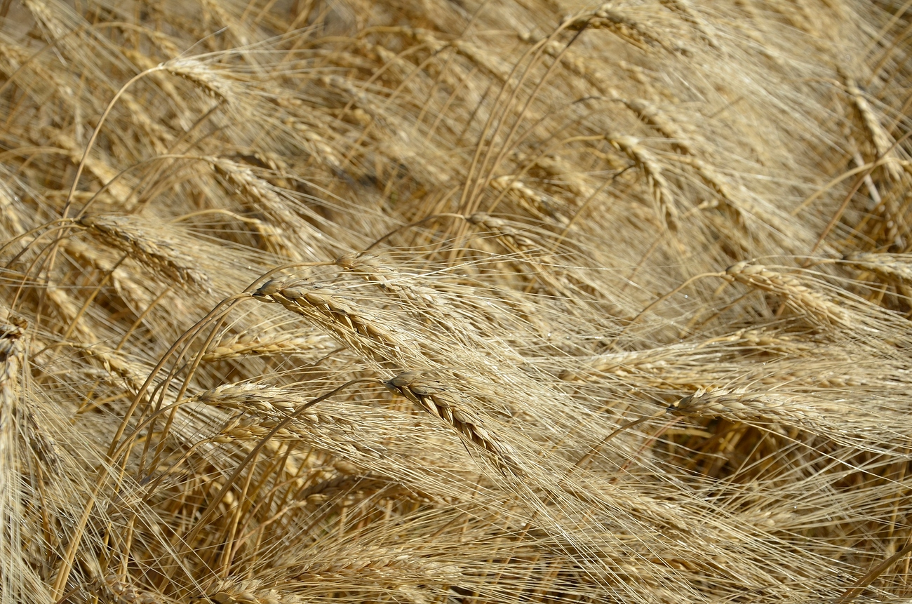
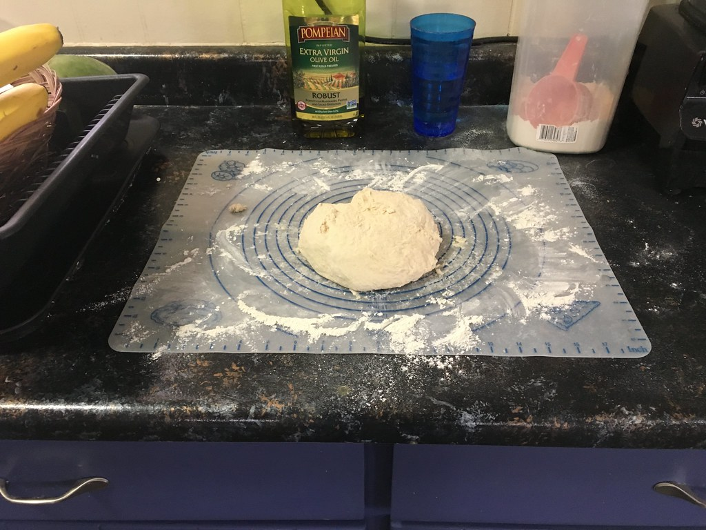
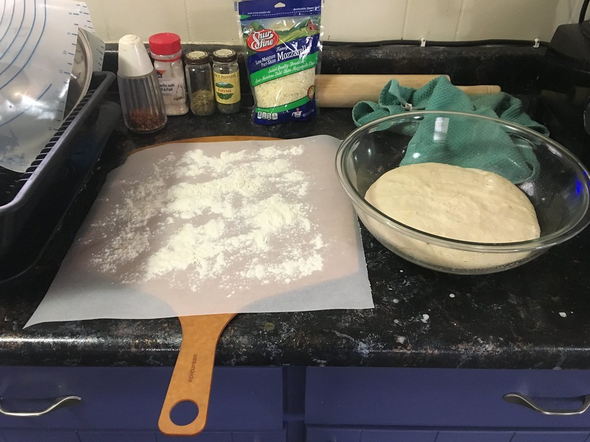
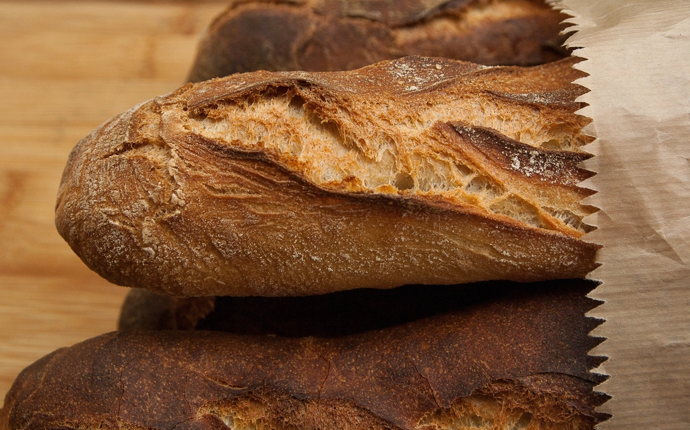
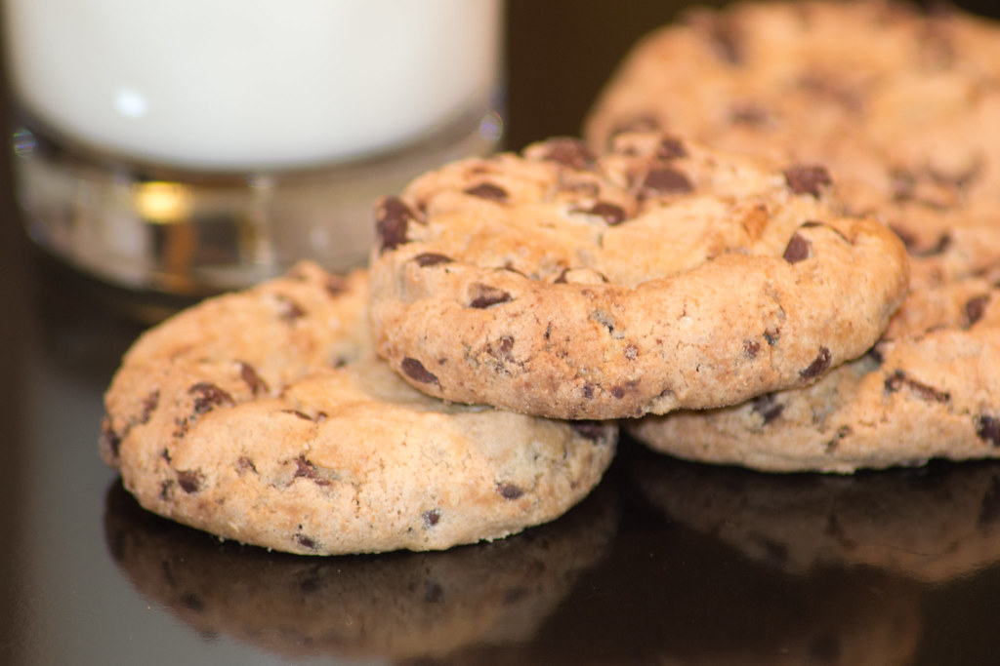

麦を、一本の線にする。
小麦粉をこね、発酵を待ち、焼き上げるまでの時間を、一本の糸を紡ぐように大切にしています。Bakery 麦つむぎです。

thread of wheat
一本の線になるまで
小麦粉、水、酵母。材料そのものはシンプルですが、そこから一本のパンに仕立てるまでには、いくつもの手仕事の時間が重なっています。
-
01粉と水を合わせる
粉をふるい、水を含ませる。糸の最初の一本を縒り合わせるような、静かな時間です。
-
02こねる
生地がまとまるまで、手でこね続けます。力の加え方ひとつで、仕上がりの質感が変わっていきます。

-
03発酵を待つ
生地が膨らむのをじっと待つ時間も、パン作りの大切な工程のひとつです。気温や湿度によって、待つ時間は日々変わります。

-
04焼き上げる
窯の中で色づいていく様子を見ながら、焼き上がりのタイミングを見極めます。

line up
店先に並ぶパンたち
ハード系パン、クロワッサン・デニッシュ、焼き菓子など。日によって並ぶ種類は変わりますが、いくつかのカテゴリでご紹介します。具体的な品目・価格は店頭でご確認ください。

voice
お客様の声より
イメージ例
「焼きたての香りに誘われて、気づけば週に何度も店先に足を運んでいます。」※これはイメージ例として作成したサンプルの声です。実際の投稿ではありません。
visit
お店まで
岡山県倉敷市中島469-1。お電話・Instagramからもお気軽にお問い合わせください。